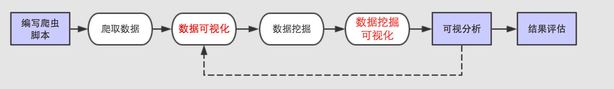
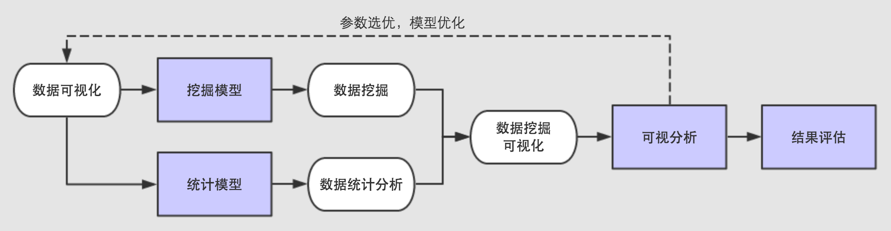
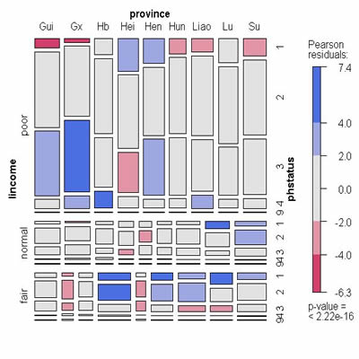

我们做了什么
数据可视化的过程
数据可视化，是关于数据视觉表现形式的科学技术研究。其中，这种数据的视觉表现形式被定义为，一种以某种概要形式抽提出来的信息，包括相应信息单位的各种属性和变量。它是一个处于不断演变之中的概念，其边界在不断地扩大。主要指的是技术上较为高级的技术方法，而这些技术方法允许利用图形、图像处理、计算机视觉以及用户界面，通过表达、建模以及对立体、表面、属性以及动画的显示，对数据加以可视化解释。与立体建模之类的特殊技术方法相比，数据可视化所涵盖的技术方法要广泛得多。
我们怎么做的
人们常说，数据是新世界的货币，而 Web 则是新世界交易的外汇局。作为消费者，我们正在在数据中漫游；处处都是数据，从食品标签，到世界卫生组织组织的报告。其结果是，信息设计师在从数据流中呈现数据时愈发凸现窘境。获得信息的最佳方式之一是，通过视觉化方式，快速抓住要点信息。另外，通过视觉化呈现数据，也揭示了令人惊奇的模式和观察结果，是不可能通过简单统计就能显而易见看到的模式和结论。正如作家、记者和信息设计师 David McCandless 在 TED 上说道：“通过视觉化，我们把信息变成了一道可用眼睛来探索的风景线，一种信息地图。当你在迷失在信息中时，信息地图非常实用。”
我们将要做什么
①数据空间：是由n维属性和m个元素组成的数据集所构成的多维信息空间。②数据开发：是指利用一定的算法和工具对数据进行定量的推演和计算；③数据分析：指对多维数据进行切片、块、旋转等动作剖析数据，从而能多角度多侧面观察数据；④数据可视化：是指将大型数据集中的数据以图形图像形式表示，并利用数据分析和开发工具发现其中未知信息的处理过程。数据可视化已经提出了许多方法，这些方法根据其可视化的原理不同可以划分为基于几何的技术、面向像素技术、基于图标的技术、基于层次的技术、基于图像的技术和分布式技术等等。
基本思想
数据可视化技术的基本思想，是将数据库中每一个数据项作为单个图元元素表示，大量的数据集构成数据图像，同时将数据的各个属性值以多维数据的形式表示，可以从不同的维度观察数据，从而对数据进行更深入的观察和分析。
数据来源
数据来自CHNS家庭经济与营养健康数据
CHNS调查是中国疾病预防控制中心营养与食品安全所（原中国预防医学科学院营 养与食品卫生研究所）与美国北卡罗来纳大学人口中心合作的追踪调查项目，其目的在于探讨中国社会的经济转型和计划生育政策的开展对国民健康和营养状况的影响。该调查始于1989年，到目前为止共进行了七次，范围覆盖了9个省的城市和农村地区，内容涉及人口特征，经济发展、公共资源和健康指标。除此之外，还有详细的社区数据，包括食品市场、医疗机构和其他社会服务设施的信息。上面这些优点使得CHNS具有独特的应用价值。
1993-2016年全国9个省的家庭个人经济数据
9个省为：黑龙江,山东,辽宁,贵州,河南,广西,湖北,湖南,江苏
页面展示
Nam ornare vulputate risus, id volutpat elit porttitor non. In consequat nisi vel lectus dapibus sodales. Pellentesque habitant morbi tristique senectus et netus et malesuada fames ac turpis egestas. Praesent bibendum sagittis libero.
Imperdiet sem interdum nec
黑龙江,山东,辽宁,贵州,河南,广西,湖北,湖南,江苏